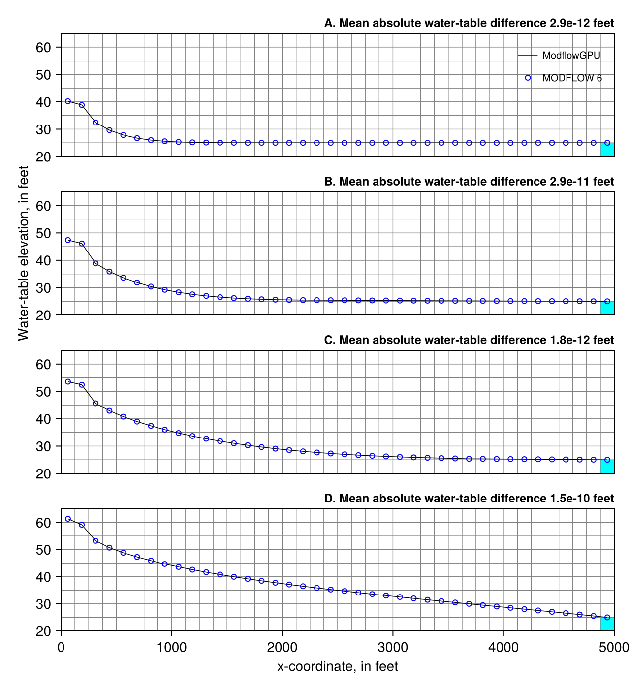
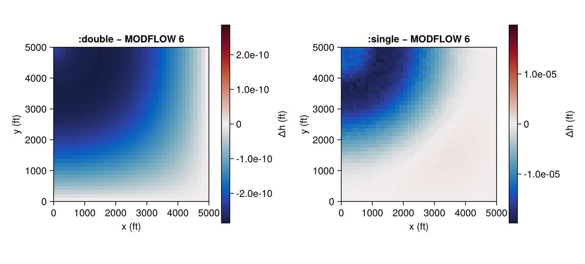
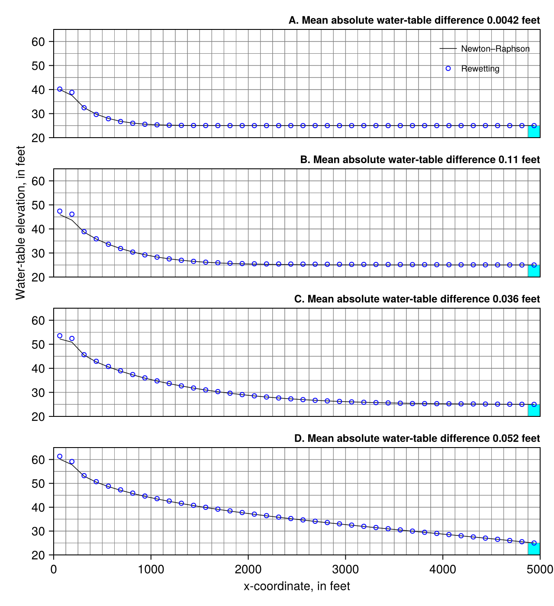

A rising water table under a recharge pond
Problem 2 of the MODFLOW-NWT documentation (Niswonger and others, 2011), first described by McDonald and others (1991) for the rewetting option of MODFLOW: a square aquifer of 5000 ft × 5000 ft in 14 layers of 40 × 40 cells, initially dry in its upper layers, with constant heads along its edges. Recharge from a pond in one corner raises the water table through the dry cells, which become wet again (rewetting with WETDRY). Four transient stress periods. Units are feet and days.
The MODFLOW 6 example ex-gwf-nwt-p02 solves it with the Newton–Raphson formulation (-p02a) and with rewetting (-p02b), and its figure compares the two. This page first runs ex-gwf-nwt-p02b and compares ModflowGPU's water table with that of MODFLOW 6 on the same input, then runs -p02a and draws the figure of the MF6 example (both solutions from ModflowGPU).
Input and the MODFLOW 6 run
ExampleTools (docs/ExampleTools.jl in the repository) takes the input from the released mf6examples.zip, sets the tight closures of the parity tests in the IMS file, and runs MODFLOW 6.8.2.
using ModflowGPU, CairoMakie
mf6 = example_run("ex-gwf-nwt-p02b")
mf6.mode, mf6.mf6_time("tight", 93.713420733)The ModflowGPU run
In :double and in :single precision on the CPU, with the default options.
runs = Dict(p => run_modflowgpu(mf6.dir, p) for p in (:double, :single))
r = runs[:double].result
r.convergedtrueThe water table
The water table (the head of the highest wet cell) along row 2 at the end of each of the four stress periods: ModflowGPU (line) and MODFLOW 6 (circles), with the cells of the cross-section and the constant-head cells (cyan), and the mean absolute difference of the water table over the whole model, as in the MF6 example (where the line is the Newton–Raphson solution and the circles the rewetting solution).
g = read_dis_grid(mf6.dir)
chd = [cell_of(g, n) for n in input_nodes(mf6.dir, "CHD")]
hf = open_head_file(r.head_file)
hf6 = open_head_file(only(filter(endswith(".hds"), readdir(mf6.dir; join = true))))
function water_table(h)
wt = fill(NaN, g.ncol, g.nrow)
for c in 1:g.ncol, rw in 1:g.nrow, l in g.nlay:-1:1
v = h[c, rw, l]
abs(v) < 1.0e30 && v > g.botm[c, rw, l] && (wt[c, rw] = v)
end
return wt
end
row = 2
fig = Figure(; size = (640, 700))
for k in 1:4
local wt, wt6 = water_table(read_head(hf, k)), water_table(read_head(hf6, k))
local mae = sum(x -> isnan(x) ? 0.0 : abs(x), wt .- wt6) / (g.ncol * g.nrow)
local ax = Axis(
fig[k, 1]; title = "$(('A':'D')[k]). Mean absolute water-table difference $(round(mae; sigdigits = 2)) feet",
titlesize = 12, titlealign = :right, ylabel = k == 2 ? "Water-table elevation, in feet" : "",
)
poly!(ax, [Rect2f(g.xe[c], g.botm[c, row, l], g.delr[c], (l == 1 ? g.top[c, row] : g.botm[c, row, l - 1]) - g.botm[c, row, l]) for (l, rw, c) in chd if rw == row]; color = :cyan)
section_grid!(ax, g; row, color = RGBf(0.5, 0.5, 0.5))
lines!(ax, g.xc, wt[:, row]; color = :black, linewidth = 0.75, label = "ModflowGPU")
scatter!(ax, g.xc, wt6[:, row]; color = :transparent, strokecolor = :blue, strokewidth = 1, markersize = 7, label = "MODFLOW 6")
ax.yticks = 20:10:60
limits!(ax, 0, 5000, 20, 65)
k == 1 && axislegend(ax; position = :rt, framevisible = false, labelsize = 10)
k < 4 && hidexdecorations!(ax; grid = false)
k == 4 && (ax.xlabel = "x-coordinate, in feet")
end
save_figure(fig, "ex-gwf-nwt-p02")
Comparison with MODFLOW 6
The head differences between ModflowGPU and MODFLOW 6 in layer 14 (the bottom layer, always wet) at the end of the simulation, in both precisions.
h6 = read_head(hf6, 4)
d = [":$p − MODFLOW 6" => read_head(open_head_file(runs[p].result.head_file), 4) .- h6 for p in (:double, :single)]
save_figure(difference_map(g, d; layer = 14, unit = "ft", xlabel = "x (ft)", ylabel = "y (ft)"), "ex-gwf-nwt-p02-difference")
The largest head differences over all layers and periods, next to the values of the parity table, and the wall times (CPU: this build, including compilation for the first run of the session; GPU: the parity table, AMD Radeon RX 7800 XT). The model writes no budget file, so the budget column compares the listing tables only.
stats = Dict(p => (; cmp = compare_with_mf6(mf6.dir, runs[p]), runs[p].time) for p in (:double, :single))
comparison_table("ex-gwf-nwt-p02b", stats; unit = "ft")| Preset | max |Δh| (ft), this build | max |Δh| (ft), parity table | Budget, this build | Budget, parity table | CPU time, this build (s) | GPU time, parity table (s) |
|---|---|---|---|---|---|---|
:double | 2.9e-10 | 2.9e-10 | 0 | 0 | 36.07 | 3.04 |
:single | 2.0e-05 | 2.0e-05 | 1.9e-06 | 1.9e-06 | 12.24 | 0.81 |
Budget: the largest difference of a budget-file flow or a listing-table rate, relative to the total inflow of its time step.
The Newton–Raphson formulation (ex-gwf-nwt-p02a)
The same model with NEWTON and COMPLEXITY COMPLEX (backtracking and delta-bar-delta under-relaxation) instead of rewetting; the cells above the water table keep a head below their bottom instead of going dry. The figure of the MF6 example: the water table of the Newton–Raphson solution (line) and of the rewetting solution (circles), both from ModflowGPU, with the mean absolute difference between them.
mf6n = example_run("ex-gwf-nwt-p02a")
runsn = Dict(p => run_modflowgpu(mf6n.dir, p) for p in (:double, :single))
hfn = open_head_file(runsn[:double].result.head_file)
fig = Figure(; size = (640, 700))
for k in 1:4
local wt, wtb = water_table(read_head(hfn, k)), water_table(read_head(hf, k))
local mae = sum(x -> isnan(x) ? 0.0 : abs(x), wt .- wtb) / (g.ncol * g.nrow)
local ax = Axis(
fig[k, 1]; title = "$(('A':'D')[k]). Mean absolute water-table difference $(round(mae; sigdigits = 2)) feet",
titlesize = 12, titlealign = :right, ylabel = k == 2 ? "Water-table elevation, in feet" : "",
)
poly!(ax, [Rect2f(g.xe[c], g.botm[c, row, l], g.delr[c], (l == 1 ? g.top[c, row] : g.botm[c, row, l - 1]) - g.botm[c, row, l]) for (l, rw, c) in chd if rw == row]; color = :cyan)
section_grid!(ax, g; row, color = RGBf(0.5, 0.5, 0.5))
lines!(ax, g.xc, wt[:, row]; color = :black, linewidth = 0.75, label = "Newton–Raphson")
scatter!(ax, g.xc, wtb[:, row]; color = :transparent, strokecolor = :blue, strokewidth = 1, markersize = 7, label = "Rewetting")
ax.yticks = 20:10:60
limits!(ax, 0, 5000, 20, 65)
k == 1 && axislegend(ax; position = :rt, framevisible = false, labelsize = 10)
k < 4 && hidexdecorations!(ax; grid = false)
k == 4 && (ax.xlabel = "x-coordinate, in feet")
end
save_figure(fig, "ex-gwf-nwt-p02-newton")
The comparison of -p02a with MODFLOW 6 (cells whose MODFLOW 6 head is below the cell bottom are dry and left out: their head is not unique, see Differences from MODFLOW 6).
statsn = Dict(p => (; cmp = compare_with_mf6(mf6n.dir, runsn[p]), runsn[p].time) for p in (:double, :single))
comparison_table("ex-gwf-nwt-p02a", statsn; unit = "ft")| Preset | max |Δh| (ft), this build | max |Δh| (ft), parity table | Budget, this build | Budget, parity table | CPU time, this build (s) | GPU time, parity table (s) |
|---|---|---|---|---|---|---|
:double | 3.5e-10 | 3.5e-10 | 0 | 0 | 62.25 | 5.13 |
:single | 1.7e-04 | 1.7e-04 | 4.6e-05 | 4.6e-05 | 68.34 | 6.01 |
Budget: the largest difference of a budget-file flow or a listing-table rate, relative to the total inflow of its time step.